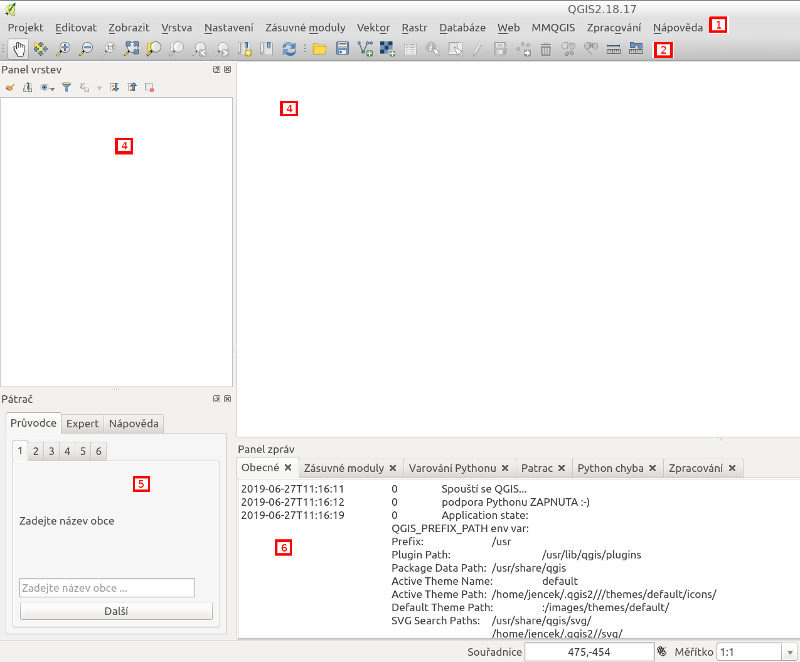

Použití
Základní ovládání

Aplikace je rozdělena do šesti částí. Na obrázku jsou označeny čísly
- Nabídka. Obsahuje možnosti jako je uložení projektu a konfiguraci.
- Nástroje. K dispozici je základní sada nástrojů pro pohyb v mapě a manipulaci s objekty v mapě.
- Panel vrstev. Umožňuje zobrazovat nebo skrývat vrstvy a jejich další konfiguraci.
- Mapové pole. Obsahuje samotnou mapu.
- Panel Pátrač. Základní funkce nástroje Pátrač.
- Panel zpráv. Informace o průběhu zpracování, případně chyby.
Nástroje
- Přiblížení mapy. (Je možno také kolečkem myši).
- Oddálení mapy. (Je možno také kolečkem myši).
- Přiblížení na rozsah celé vrstvy.
- Zahájení a ukončení editace objektů v mapě.
- Vložení objektu do vrstvy.
- Smazání objektu.
- Uložení editace.
- Výběr objektu.
- Sloučení vybraných objektů do jednoho.
- Rozdělení objektu na dva.
- Zobrazení informací o objektu.
- Přidání další vektorové vrstvy (např. GPX soubor).
- Přidání další rastrové vrstvy (např. letecký snímek).
Zavedení zásuvného modulu
Aplikace Quantum GIS by měla startovat s již zavedeným modulem. Může se však stát, že dojde k vypnutí panelu nástrojů. Panel nástrojů se zapne přes nabídku Zásuvné moduly.
Použití zásuvného modulu
V panelu modulu využijeme nejdříve Průvodce. Ten mimo jiné pomůže vytvořit projekt pátrání.